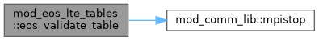
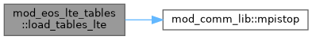
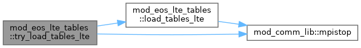

|
MPI-AMRVAC 3.2
The MPI - Adaptive Mesh Refinement - Versatile Advection Code (development version)
|
Shared LTE lookup-table infrastructure (build/IO; not on the hot path). More...
Functions/Subroutines | |
| subroutine, public | ensure_axis_nodes (tc) |
| Ensure tcvar1_nodes / tcvar2_nodes are allocated and populated so that build_*_table routines and other code can reference axis positions uniformly (no is_uniform branching). For uniform tables we generate evenly-spaced node arrays from var{1,2}_min/max. | |
| subroutine, public | shift_axis_to_code (tc) |
| Shift a table's (log_nH, log_eint/nH) axes – and adaptive node arrays if present – from CGS storage to code units. Used by the entropy method so eos_finalise can apply the shift AFTER unit_* are populated. | |
| subroutine, public | shift_axis_to_code_t (tc) |
| subroutine, public | eos_build_guards (tc) |
| Build guard (bucket) arrays so that adaptive index lookup is O(1). No-op for uniform tables. Safe to call repeatedly. Idea here is to map nonuniform table nodes to a uniform search grid. | |
| subroutine, public | eos_validate_table (tc, name) |
| Defensive consistency check for one table after init. Aborts with a diagnostic message if any silent-failure invariant is violated. | |
| subroutine, public | precompute_fi_bypass_constants () |
| subroutine, public | load_tables_lte (fieldname) |
| Read one named table file into its eos% container. The filename encodes the composition (H or HHe) and whether ionisation energy is included. | |
| subroutine, public | try_load_tables_lte (fieldname) |
| Attempt to load pre-computed table from binary file. If the file does not exist, silently skip and the table will be built at runtime. | |
Shared LTE lookup-table infrastructure (build/IO; not on the hot path).
The table-file machinery used by ALL LTE methods (state, entropy, analytic): binary-file readers (read_eos_from_file / load_tables_LTE / try_load_tables_LTE), per-container preparation (ensure_axis_nodes, code-unit axis shifts, O(1) guard arrays via eos_build_guards, eos_validate_table) and the fully-ionised bypass constants. NOT a method: 'tables' here means the literal lookup tables, not the 'state' method (which lives in mod_eos_LTE_state and consumes this infra). Everything here runs once, during eos_init_LTE / eos_finalise_LTE.
| subroutine, public mod_eos_lte_tables::ensure_axis_nodes | ( | type(eos_table_container), intent(inout) | tc | ) |
Ensure tcvar1_nodes / tcvar2_nodes are allocated and populated so that build_*_table routines and other code can reference axis positions uniformly (no is_uniform branching). For uniform tables we generate evenly-spaced node arrays from var{1,2}_min/max.
Lookup performance is unaffected: bicubic_lookup / bilinear_lookup still branch on tcis_uniform – uniform tables go through the affine fast path; only adaptive tables consult var{1,2}_nodes.
Definition at line 38 of file mod_eos_LTE_tables.t.
| subroutine, public mod_eos_lte_tables::eos_build_guards | ( | type(eos_table_container), intent(inout) | tc | ) |
Build guard (bucket) arrays so that adaptive index lookup is O(1). No-op for uniform tables. Safe to call repeatedly. Idea here is to map nonuniform table nodes to a uniform search grid.
Definition at line 93 of file mod_eos_LTE_tables.t.
| subroutine, public mod_eos_lte_tables::eos_validate_table | ( | type(eos_table_container), intent(in) | tc, |
| character(len=*), intent(in) | name | ||
| ) |
Defensive consistency check for one table after init. Aborts with a diagnostic message if any silent-failure invariant is violated.
Value finiteness: a NaN (e.g. from dlog10 of a non-positive stored value, or a truncated/corrupt file read) otherwise passes the structural checks and only surfaces as a runtime FPE deep in a lookup. The x /= x idiom is NaN-true without needing the ieee_arithmetic module.
Definition at line 150 of file mod_eos_LTE_tables.t.

| subroutine, public mod_eos_lte_tables::load_tables_lte | ( | character(len=*), intent(in) | fieldname | ) |
Read one named table file into its eos% container. The filename encodes the composition (H or HHe) and whether ionisation energy is included.
Always consider at least hydrogen
Consider the ionisation energy?
Entropy-method tables. Unit shifts MUST happen in eos_finalise (where unit_* are set), not here.
Definition at line 266 of file mod_eos_LTE_tables.t.

| subroutine, public mod_eos_lte_tables::precompute_fi_bypass_constants |
Precompute constants for bypassing table lookups when gas is fully ionised. Physics: above T ~ 50 kK, H is >99.99% ionised and He is >90% ionised. The EoS reduces to ideal gas with constant mu, Gamma_1 = 5/3, ne/nH = 1+2*A_He. We check eint/rho > threshold (1 division + 1 comparison) to skip all table lookups.
Ionisation energies in CGS (erg)
Fully-ionised particle counts and electron fraction
Total ionisation energy per hydrogen atom (CGS), converted to code units eion_per_nH [code] = eion_per_nH [erg] / (unit_pressure / unit_numberdensity)
No-energy mode (.not. ionE): the ionisation energy is NOT folded into eint, so it must not appear anywhere in the thermodynamics. Zeroing it here collapses both the FI threshold below and every FI-zone temperature path (update_eos_LTE, get_temperature_from_eint[_fast]_LTE, the analytic FI bypasses) to their correct no-energy form from one place – the from-eint getters subtract eion unconditionally, so this is what keeps them consistent with update_eos_LTE's ionE-gated branch.
Bypass threshold: eint/rho value corresponding to T = 200,000 K fully ionised. Raised from 50 kK to 200 kK so that blended LTE tables (which converge to FI by 200 kK) match the bypass formula exactly at the threshold – no discontinuity in ne/nH, T, Gamma_1, or p when cells cross the boundary. eint/nH = 1.5 * n_per_nH * kB * T + eion_per_nH (all in code units) eint/rho = eint/nH / nH2rhoFactor
Pressure-based threshold for primitive-variable checks: For FI gas, T = p / (rho * Rfactor_FI), so p/rho > Rfactor_FI * T_thresh where Rfactor_FI = n_per_nH_FI / (1 + 4*A_He) in code units
Definition at line 209 of file mod_eos_LTE_tables.t.
| subroutine, public mod_eos_lte_tables::shift_axis_to_code | ( | type(eos_table_container), intent(inout) | tc | ) |
Shift a table's (log_nH, log_eint/nH) axes – and adaptive node arrays if present – from CGS storage to code units. Used by the entropy method so eos_finalise can apply the shift AFTER unit_* are populated.
| [in,out] | tc | CGS -> code shift assuming axis-1 = log(nH) and axis-2 = log(eint/nH) (or log(p/nH); both share the same erg/particle unit conversion). |
Definition at line 62 of file mod_eos_LTE_tables.t.
| subroutine, public mod_eos_lte_tables::shift_axis_to_code_t | ( | type(eos_table_container), intent(inout) | tc | ) |
| [in,out] | tc | CGS -> code shift for tables whose axis-2 = log(T) (K). Axis-1 = log(nH) shift as in the standard case. |
Definition at line 76 of file mod_eos_LTE_tables.t.
| subroutine, public mod_eos_lte_tables::try_load_tables_lte | ( | character(len=*), intent(in) | fieldname | ) |
Attempt to load pre-computed table from binary file. If the file does not exist, silently skip and the table will be built at runtime.
Definition at line 391 of file mod_eos_LTE_tables.t.
